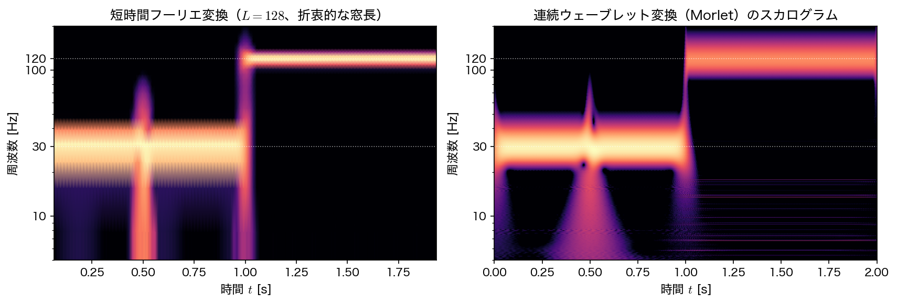
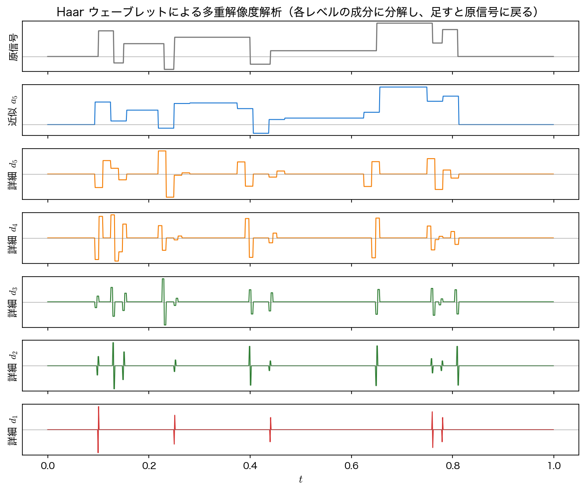
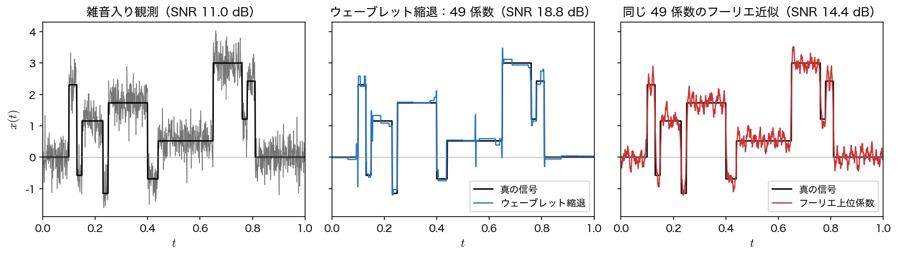

連続・離散ウェーブレット変換
第9回の 短時間フーリエ変換 で、STFT の分解能は窓長 \(L\) を選んだ時点で時間周波数平面の全域に固定されてしまうことを見た。本ページでは、波を伸縮させて周波数ごとに分解能を変える ウェーブレット変換を導入する。連続版（CWT）で時間周波数の見え方を確かめ、離散版（DWT）で多重解像度解析・圧縮・雑音除去に使う。
母ウェーブレットとスケール
STFT では「固定幅の窓 × 周波数を変える複素正弦波」を信号に当てていた。ウェーブレット変換では、これを 一つの波形を伸縮・平行移動したもの に置き換える。基準となる波形 \(\psi(t)\) を 母ウェーブレット（mother wavelet） と呼び、そこから
という族を作る。\(b\) は 位置（いつ見るか）、\(a\) は スケール（どれだけ引き伸ばすか）で、\(a\) が小さいほど波は細く縮んで高周波に対応し、\(a\) が大きいほど間延びして低周波に対応する。頭の \(1/\sqrt{a}\) は、どのスケールでもエネルギー \(\int|\psi_{a,b}|^2dt\) が等しくなるようにする正規化である。
母ウェーブレットは何でもよいわけではなく、変換したものを元の信号へ戻せるためには 許容条件（admissibility condition）
を満たす必要がある。\(\psi\) が可積分なら \(\Psi\) は連続なので、\(f\to0\) で被積分関数が発散しないためには \(\Psi(0)=\int\psi\,dt=0\)、すなわち 平均が 0 でなければならない。正負に振動して減衰する、文字どおり「小さな波」である必要があるということで、実用上はこの「平均 0」を目安と考えてよい。本ページでは、ガウス窓つきの複素正弦波である Morlet ウェーブレット
を使う（pywt では "cmorB-C" の形で帯域幅 \(B\) と中心周波数 \(f_c\) を指定する）。複素なので、その絶対値をとれば 包絡（どれだけ強いか） が位相の振動に邪魔されずに読める。
Morlet の平均は厳密には 0 ではない
上の式をそのまま積分すると \(\displaystyle\int_{-\infty}^{\infty}\psi(t)\,dt=e^{-\pi^{2}Bf_c^{2}}\) となり、厳密には \(0\) にならない。ガウス関数のフーリエ変換がどこでも正だからで、その値を \(f=0\) まで平行移動しきれないためである。ただし本ページで使う cmor1.5-1.0（\(B=1.5\)、\(f_c=1.0\)）では \(e^{-1.5\pi^{2}}=3.72\times10^{-7}\) と、係数の大きさに比べて桁違いに小さい。厳密に平均 0 にしたければ補正項を引いた「修正 Morlet」を使うが、\(Bf_c^{2}\) が 1 を十分に超えていれば差は数値誤差に埋もれるので、実務ではそのまま使うのが普通である。
STFT との違いは「窓の幅が周波数に連動すること」
STFT でも周波数を変えて相関を測るが、窓の幅は全周波数で同じだった。ウェーブレットは波形ごと引き伸ばすので、高周波を見るときは自動的に窓が短く、低周波を見るときは自動的に窓が長くなる。1 オクターブ上がるごとに時間幅が半分になり、第9回の タイル図 の右側 ── 高周波では細く背の高いタイル、低周波では幅広く平たいタイル ── がそのまま実現される。これを 定 Q 特性（\(f/\Delta f\) が一定）ともいう。
連続ウェーブレット変換とスカログラム
信号 \(x(t)\) に \(\psi_{a,b}\) を当てて相関を測ったものが 連続ウェーブレット変換（continuous wavelet transform, CWT）
である（\(\overline{\phantom{x}}\) は複素共役）。\(|W(a,b)|\) ないしその 2 乗 \(|W(a,b)|^{2}\) を、横軸 \(b\)・縦軸 \(a\)（または対応する周波数）の濃淡図にしたものを スカログラム（scalogram） と呼ぶ。スペクトログラムのウェーブレット版である。エネルギー密度として扱う文献では \(|W|^{2}\) を採る定義が多い。本ページの図は振幅 \(|W|\) を最大値で規格化して \(20\log_{10}\) で表示しており、これは \(|W|^{2}\) を \(10\log_{10}\) で表示するのと同じ値になる。
連続時間で書いた \(\psi_{a,b}\) では \(a\) は \(t\) と同じ時間の次元をもつが、pywt は標本番号を時間軸として扱うので、そこでの \(a\) は 何サンプル分に引き伸ばすか という無次元の数になる。この無次元スケールを周波数として読むには換算が要る。母ウェーブレットの中心周波数を \(f_c\)（サンプルあたりの周期数）とすると、スケール \(a\) が対応する周波数は
である。pywt.central_frequency で \(f_c\) が取れるので、見たい周波数の列から必要なスケールを逆算できる。線形に周波数が上がるチャープ信号で、CWT が瞬時周波数を正しく追えるかを確かめる。
import numpy as np
import scipy.signal as ss
import pywt
fs = 1000.0
t = np.arange(0, 2.0, 1/fs)
chirp = ss.chirp(t, f0=10, f1=120, t1=2.0, method="linear") # 10 Hz → 120 Hz
wav = "cmor1.5-1.0" # 複素 Morlet（帯域幅 1.5・中心周波数 1.0）
fc = pywt.central_frequency(wav)
freqs = np.geomspace(5, 200, 512) # 見たい周波数 [Hz]
scales = fc*fs/freqs # a = f_c f_s / f
coef, f_cwt = pywt.cwt(chirp, scales, wav, sampling_period=1/fs)
err = np.abs(f_cwt - freqs).max()
print(f"中心周波数 f_c={fc:.1f} scales->freqs 誤差={err:.2e}")
for t0 in (0.5, 1.0, 1.5):
fp = f_cwt[np.argmax(np.abs(coef[:, int(t0*fs)]))]
print(f"t={t0:.1f}s: CWT ピーク {fp:6.2f} Hz / 真値 {10+55*t0:6.2f} Hz "
f"({(fp/(10+55*t0)-1):+.1%})")
中心周波数 f_c=1.0 scales->freqs 誤差=2.84e-14
t=0.5s: CWT ピーク 37.20 Hz / 真値 37.50 Hz (-0.8%)
t=1.0s: CWT ピーク 64.86 Hz / 真値 65.00 Hz (-0.2%)
t=1.5s: CWT ピーク 92.38 Hz / 真値 92.50 Hz (-0.1%)
pywt が返す周波数 f_cwt は、こちらが指定した freqs と \(10^{-14}\) の精度で一致しており、換算式 \(a=f_c f_s/f\) が正しいことが確認できる。各時刻で \(|W|\) が最大になる周波数を読むと、チャープの真の瞬時周波数 \(f(t)=10+55t\) に対して誤差はいずれも 1 % 以内である。時刻ごとに周波数が読めている ── 信号全体を一つのスペクトルへ写すフーリエ変換の表現では、直接には読み取れなかったことである。
同じ信号を STFT と CWT で見比べる。

離散ウェーブレット変換と多重解像度解析
CWT はスケール \(a\) と位置 \(b\) を連続に動かすので情報が大きく重複しており、係数の数は元の信号よりずっと多い（上の例では 512 スケール × 2000 点）。解析・可視化には向くが、圧縮や高速処理には冗長すぎる。そこで、スケールと位置を
と 2 のべき（ダイアディック）に離散化 したものが 離散ウェーブレット変換（discrete wavelet transform, DWT） である。第9回のタイル図の右側が、まさにこの格子にあたる。
ただし、どんな母ウェーブレットでもこの格子に間引けば元へ戻せる、というわけではない。復元できるのは、\(\psi\) と対になる スケーリング関数 \(\varphi\)（低周波側をになう関数）が存在し、両者から作った \(\{\psi_{j,k}\}\) が正規直交基底、あるいは分解用と再構成用を分けた双直交系をなすように設計されている場合に限られる。Haar・Daubechies（db4）・Symlets（sym8）など pywt が用意している族はいずれもそう作られているので、以下ではそれらを使う。上で見た複素 Morlet はこの条件を満たさず、pywt でも CWT 専用（ContinuousWavelet）として扱われる。
DWT の実装は、意外にも積分ではなく フィルタバンク になる。信号を低域通過フィルタと高域通過フィルタに通して 2 点に 1 点だけ残す（ダウンサンプリング）と、
- 近似係数 \(a_1\)：低周波側（もとの半分の長さ）
- 詳細係数 \(d_1\)：高周波側（もとの半分の長さ）
に分かれる。合わせた個数はもとの長さと同じで、情報は失われていない（実際の実装では端の処理のぶんだけ少し増える。後述）。同じ操作を近似係数 \(a_1\) にもう一度、さらにもう一度…と繰り返すと、
という階層的な分解が得られる。これが 多重解像度解析（multiresolution analysis, MRA） で、\(d_1\) が最も細かい（高周波の）成分、\(a_J\) が最も粗い（低周波の）背景を表す。逆フィルタで足し戻せば元の信号に 完全に 復元できる。
def blocks(n=1024):
"""区分定数の試験信号（不連続をもつ）。"""
u = np.linspace(0, 1, n, endpoint=False)
pos = [.10, .13, .15, .23, .25, .40, .44, .65, .76, .78, .81]
hgt = [4, -5, 3, -4, 5, -4.2, 2.1, 4.3, -3.1, 2.1, -4.2]
s = sum(h*(1 + np.sign(u - p))/2 for p, h in zip(pos, hgt))
return u, s/np.abs(s).max()*3
u, s = blocks()
cf = pywt.wavedec(s, "db4", level=4) # [a4, d4, d3, d2, d1]
print("db4 level=4 の係数長:", [len(a) for a in cf])
rec = pywt.waverec(cf, "db4")[:len(s)]
print(f"waverec の再構成誤差 = {np.abs(rec - s).max():.2e}")
レベルが上がるごとに係数の長さがほぼ半分になっていき（515 → 261 → 134 → 70）、waverec で足し戻すと誤差 \(1.78\times10^{-15}\) ── 機械精度で完全に元の信号に戻る。DWT は情報を捨てない 可逆な 変換であり、フーリエ変換と同じく信号の「別の座標系での表現」にすぎない。
係数の総数がもとより少し多いのはなぜか
上の係数長を足すと \(70+70+134+261+515=1050\) で、もとの \(1024\) より \(26\) 個多い。タップ数 8 の db4 で畳み込むと信号の端がはみ出すので、pywt は既定で外側を折り返して延長し（mode="symmetric"）、そのぶん係数が増えるためである。「合計＝もとの長さ」がぴったり成り立つのは、フィルタ長 2 の Haar を使ったとき（本ページ以降の例はこちら。\(512+256+128+64+32+32=1024\)）か、周期延長 mode="periodization" を指定したとき（db4 でも \(512+256+128+64+64=1024\)）である。ただし周期延長は信号の両端をつなげてしまうので、そこが不連続なら端の詳細係数が大きくなる。いずれの場合も 完全再構成は成り立つ（周期延長でも実測の再構成誤差は \(2.66\times10^{-15}\)）。

スパース性：少数の係数で表せるか
上の図で目を引くのは、詳細成分が 段差のある場所にしか立っていない ことである。平坦な区間の係数はほぼ 0 なので、大きい係数だけ残して残りを捨てても信号はほとんど変わらない。この性質を スパース性（sparsity） といい、圧縮と雑音除去の両方を支える。
同じことをフーリエ変換でやろうとすると分が悪い。不連続点を正弦波で表すには全周波数にわたる係数が要る（第2回の Gibbs 現象）からである。大きいほうから \(K\) 個だけ係数を残す \(K\) 項近似 の相対誤差 \(\|x-\hat x\|/\|x\|\) を、フーリエと Haar ウェーブレットで比べる。
「同じ \(K\) 個」は同じ情報量ではない
以下の比較では、フーリエ側は rfft の 複素 係数を \(K\) 個、Haar 側は 実 係数を \(K\) 個残している。直流とナイキストを除く複素係数は実の自由度 2 個ぶんなので、同じ \(K\) でもフーリエ側のほうがおよそ 2 倍の情報を使っていることになる。つまりこの比較は フーリエに有利な条件 であり、「それでもウェーブレットが勝つ」という読み方をするのが正しい。実数の自由度をそろえたければ、フーリエ側の個数を半分にして比べればよい。
def relerr(a, b):
return np.linalg.norm(a - b)/np.linalg.norm(a)
n = len(s)
for K in (16, 32, 64, 128):
X = np.fft.rfft(s); Xk = np.zeros_like(X)
i = np.argsort(np.abs(X))[::-1][:K]; Xk[i] = X[i] # 上位 K 個の係数
ef = relerr(s, np.fft.irfft(Xk, n))
cc = pywt.wavedec(s, "haar", level=8)
arr, sl = pywt.coeffs_to_array(cc); a2 = np.zeros_like(arr)
j = np.argsort(np.abs(arr))[::-1][:K]; a2[j] = arr[j] # 上位 K 個の係数
ew = relerr(s, pywt.waverec(
pywt.array_to_coeffs(a2, sl, output_format="wavedec"), "haar")[:n])
print(f"K={K:4d}: フーリエ {ef:.4f} Haar {ew:.4f}")
K= 16: フーリエ 0.2756 Haar 0.3016
K= 32: フーリエ 0.1837 Haar 0.1504
K= 64: フーリエ 0.1242 Haar 0.0100
K= 128: フーリエ 0.0829 Haar 0.0000
\(K=16\) ではフーリエのほうがわずかに良いが、\(K\) を増やすと差が開く。\(K=64\) でフーリエが 12 % の誤差を残しているのに対し Haar は 1 %、\(K=128\) ではフーリエが依然 8 % なのに Haar は 誤差 0（この信号は段差が 11 個なので、Haar 係数 128 個で厳密に表現しきれる）。フーリエの誤差が \(K\) に対してなかなか落ちないのは、不連続点をもつ信号のフーリエ係数が \(O(1/k)\) でしか減衰せず、どこまで足しても裾が残るからである（第2回で見た Gibbs 現象は、この裾を打ち切ったときに不連続点の近くで一定割合の行き過ぎが消えない、という同じ性質の別の現れ方である）。要するに 不連続をもつ信号には、局在した基底のほうが圧倒的に効率がよい。JPEG 2000 が離散コサイン変換ではなくウェーブレットを採用しているのも同じ理由である。
どのウェーブレットを選ぶか
上の例で Haar が強いのは、信号（区分定数）と母ウェーブレット（矩形状の Haar）の形が似ている からである。なめらかな信号なら Daubechies db4・sym8 のようになめらかな母ウェーブレットのほうが少ない係数で済む。「解析したい特徴に似た形の母ウェーブレットを選ぶ」が基本方針で、実務では複数試して \(K\) 項近似の誤差を比べるのが手っ取り早い。
ウェーブレット縮退による雑音除去
スパース性は雑音除去にそのまま使える。理屈はこうである ── 信号のエネルギーは少数の大きな係数に集中する が、白色雑音は正規直交な基底に移してもやはり白色のまま、全係数に薄く広がる（直交変換は独立同分布の正規雑音の分布を変えない）。したがって、小さい係数を 0 にすれば、雑音を選択的に落とせる。これを ウェーブレット縮退（wavelet shrinkage） という。
しきい値は雑音の標準偏差 \(\sigma\) から決める。最も細かいレベルの詳細係数 \(d_1\) はほとんど雑音なので、外れ値に強い MAD（中央絶対偏差） を使って
とする（\(0.6745\) は正規分布の MAD と標準偏差の比、\(\lambda\) は ユニバーサルしきい値）。\(|c|<\lambda\) の係数を 0 にして（ハードしきい値処理）逆変換すれば復元信号が得られる。しきい値をかけるのは 詳細係数 \(d_J,\dots,d_1\) だけ で、信号の平均やゆるやかな背景をになう近似係数 \(a_J\) はそのまま残す（下のコードで c[0] を処理から外しているのがこれにあたる）。比較のため、残ったウェーブレット係数と同じ個数だけ 上位のフーリエ係数を残した近似も並べて評価する（上の warning のとおり、複素係数を同数残すぶんフーリエ側に有利な条件である）。
この方法が前提にしていること
ユニバーサルしきい値による縮退は、(1) 雑音が 加法的な独立同分布の正規雑音 であること、(2) 使う変換が 正規直交 であること（haar や db4 はそう。双直交ウェーブレットでは係数側の雑音が白色でなくなる）、(3) 最も細かいレベルの詳細係数 \(d_1\) が ほとんど雑音だけ でできていること、の 3 点を前提にしている。時間相関のある有色雑音ではレベルごとに雑音の大きさが変わるのでレベル別のしきい値が要る。また信号自体がサンプリング周波数に対して高周波すぎて \(d_1\) に乗ってしまうと、\(\hat\sigma\) が過大に出て信号まで削ってしまう。
rng = np.random.default_rng(3)
noisy = s + rng.normal(0, 0.4, n) # SNR 約 11 dB の観測
c = pywt.wavedec(noisy, "haar", level=6)
sigma = np.median(np.abs(c[-1]))/0.6745 # 最細レベルの MAD から雑音を推定
thr = sigma*np.sqrt(2*np.log(n)) # ユニバーサルしきい値
ct = [c[0]] + [pywt.threshold(d, thr, mode="hard") for d in c[1:]]
den = pywt.waverec(ct, "haar")[:n]
K = sum(int(np.count_nonzero(a)) for a in ct) # 残った係数の個数
X = np.fft.rfft(noisy); Xk = np.zeros_like(X) # 同じ K 個で作るフーリエ近似
i = np.argsort(np.abs(X))[::-1][:K]; Xk[i] = X[i]
four = np.fft.irfft(Xk, n)
def snr(ref, est):
return 10*np.log10((ref**2).sum()/((ref - est)**2).sum())
print(f"sigma 推定={sigma:.4f}（真値 0.400） しきい値={thr:.4f} "
f"残った係数={K}/{n}")
print(f"SNR: 雑音入り {snr(s, noisy):.2f} dB "
f"-> ウェーブレット {snr(s, den):.2f} dB "
f"/ 同数フーリエ {snr(s, four):.2f} dB")
sigma 推定=0.4049（真値 0.400） しきい値=1.5077 残った係数=49/1024
SNR: 雑音入り 10.98 dB -> ウェーブレット 18.83 dB / 同数フーリエ 14.39 dB
MAD から推定した \(\hat\sigma=0.4049\) は真値 \(0.400\) をよく当てている（雑音の大きさを知らなくてもデータから推定できる のがこの方法の実用上の利点である）。1024 個の係数のうち残ったのはわずか 49 個 ── 内訳は無処理の近似係数 \(a_6\) が 16 個、しきい値を生き残った詳細係数が 33 個 ── で、それだけで SNR は 10.98 dB から 18.83 dB へ 7.85 dB 改善した。同じ 49 個のフーリエ係数を使った近似は 14.39 dB にとどまる ── 段差を表すのに係数を使い切ってしまい、雑音を落とす余力が残らないためである。しかもこの 49 個は複素係数（うち直流が 1 個）なので実の自由度は 97 あり、条件はフーリエ側に有利である。

使うときの注意
ユニバーサルしきい値 \(\hat\sigma\sqrt{2\log N}\) は「雑音を確実に消す」側に振れた保守的な設定で、弱い信号成分まで削りがちである。信号を残したいときは、しきい値を下げる・mode="soft"（\(|c|>\lambda\) の係数だけを符号を保ったまま \(\lambda\) だけ 0 に近づけ、\(|c|\le\lambda\) は 0 にする）に変える・レベルごとにしきい値を変えるなどの調整をする。またハードしきい値は不連続なので復元にわずかな凹凸が出やすく、ソフトしきい値は滑らかな代わりに振幅が全体に縮む。どちらが良いかは目的しだいである。
まとめ
- ウェーブレット変換は、母ウェーブレット \(\psi\) を伸縮・平行移動した \(\psi_{a,b}(t)=\dfrac{1}{\sqrt a}\psi\!\left(\dfrac{t-b}{a}\right)\) を信号に当てる。母ウェーブレットは許容条件 \(C_\psi=\int_0^\infty|\Psi(f)|^2/f\,df<\infty\) を満たす必要があり、その帰結として平均が（ほぼ）0 になる。
- CWT \(W(a,b)=\int x\,\overline{\psi_{a,b}}\,dt\) とその絶対値の図（スカログラム）で、時刻ごとの周波数が読める。スケールと周波数は \(f=f_c f_s/a\) で対応し、チャープの瞬時周波数を誤差 1 % 以内で追えた。定 Q なので、対数周波数軸では帯の太さが周波数によらずほぼ一定になる（\(-6\) dB 帯幅で 0.182 桁 / 0.185 桁）。
- DWT はスケールと位置を 2 のべきに離散化したもので、フィルタバンクによる 多重解像度解析 \(\{a_J,d_J,\dots,d_1\}\) になる。スケーリング関数と組で正規直交（または双直交）系をなすよう設計された族に限り完全再構成でき、
wavedec／waverecの再構成誤差は \(1.78\times10^{-15}\) だった。 - 局在した基底ゆえに係数が スパース になる。区分定数信号の \(K=64\) 項近似で、相対誤差はフーリエ 0.1242 に対し Haar 0.0100（しかもフーリエ側は複素係数 64 個なので、条件はフーリエに有利）。
- ウェーブレット縮退（\(\lambda=\hat\sigma\sqrt{2\log N}\)、\(\hat\sigma\) は \(d_1\) の MAD 推定）は、詳細係数だけをしきい値処理して残った 49 係数で SNR を 10.98 → 18.83 dB に改善した。同数のフーリエ係数による近似（14.39 dB）を大きく上回る。
本講義との接続
第2〜4回のフーリエ変換、第6〜8回のラプラス変換、第9回の短時間フーリエ変換に、今回のウェーブレット変換が加わって「信号とシステムを別の座標系で見る」道具がひととおりそろった。第15回の発表会② では、第6〜14回の手法を各自が見つけた実問題に適用して発表する。時間とともに性質が変わるデータ ── 音・振動・生体信号・気象・経済時系列など ── は、第9・10回の時間周波数解析の格好の題材である。準備の進め方は 発表会ガイド を参照のこと。なお「大きい係数だけ残して信号を表す」という今回の発想は、第13回 特異値分解 で行列に対する低ランク近似として、第14回 動的モード分解 で時空間データのモード分解として、形を変えて再登場する。